CatchScan
2
3 weeks
Copyright Protection SaaS

Overview
CatchScan is an IT company, whose mission is to help content creators to protect their brand and place them in control of their content. Their product is a software driven platform where content creators can establish an automated protection regarding to their copyright. They offer a web app, where influencers or other artists can insert their intellectual work (for now only images) and make sure that no one else is using it without their permission. As the creator upload their work, the algorithm can search for any misconduct.
Our client gave us the task to come up with a user-friendly interface and reestablish the architecture of their app while utilizing their already existing in-house algorithm.
Problem
Our client had created a beta version of their product, where their main focus was on the functionality itself, rather than the user experience. This led to broken user flows of the existing dashboard, resulting in an unpleasing, confusing experience, which doesn’t represent the company’s values.
Objective
The goal of this project is to create a web app for CatchScan, which will be utilizing their copyright matching algorithm. We need to create a visual interface with a well-developed and optimized structure, which will focus on information architecture and user navigation. The dashboard interface will be created from scratch and will help the user to find the functions with ease and fulfill their needs.
Benchmarking
After meeting with our client, we did extensive research on competitors’ web solutions. Based on that, we came down to the conclusion that there are multiple companies trying to solve the same matter as our client. After discovering them we discussed them with our client and concluded our findings. Turned out that the main similarity between the business is the purpose of searching for an authorized nor misused content created by creative artists. After further investigation we noticed and listed the main pros and cons of their solutions.
User Research
We had started off by user categorization prior to conducting qualitative interviews to define who is our target audience that will be using our web application. First we had set a subjective criteria where are we considered our user base based on their behaviors and psychographics. After this we also established an objective criteria which consisted of, they are geographic and the demographic status.
Based on our results we assume that our target audience is English speaking content creators between the age of 18-35. They are professionals who due to their busy lifestyle lack the time to deal with the misuse of their content.
After we prepared the user categorization, we have created an interview guide. By having this, we were able to understand the thinking process of our users and how they are relating and dealing with this issue.
Empathy Map
To organize and see the outcome of the interviews we created an empathy map, where we have sorted our results into four sections
This helped us not only to further understand our users but also to prioritize their needs.
Personas
To enhance our research further, we believe we can benefit from creating Personas. As a result, we came up with two personas, which helped us to get a better understanding about what our users’ possible needs could be and what aspects should we emphasize on based on our research.
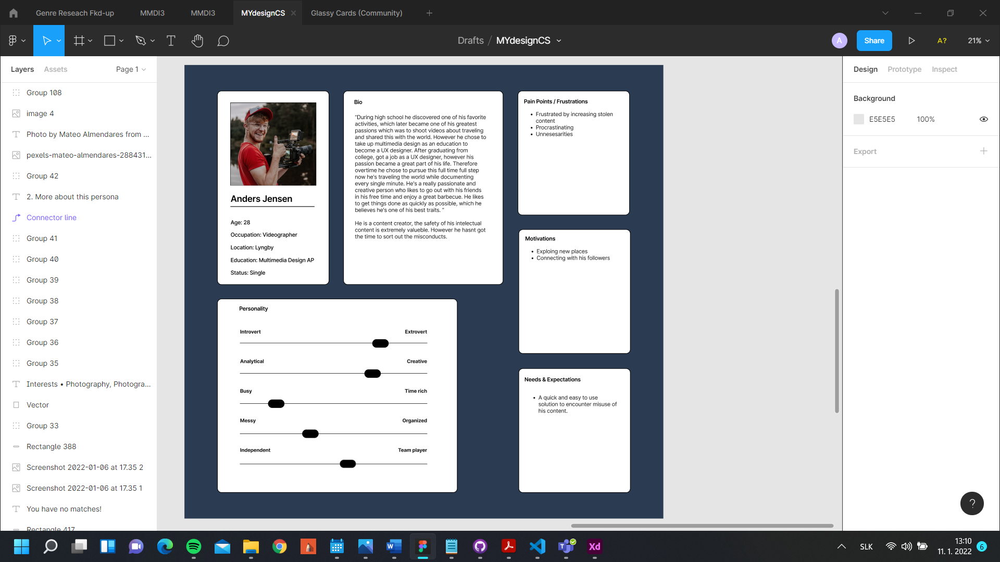
The first Persona is Anders Jensen, a Danish outgoing videographer from Lyngby, who is looking for a way to protect his content and take legal action against the violators who used his videos without permission. The fast-paced lifestyle of Anders does not allow to him to look whether his content was stolen, as he is always on the move
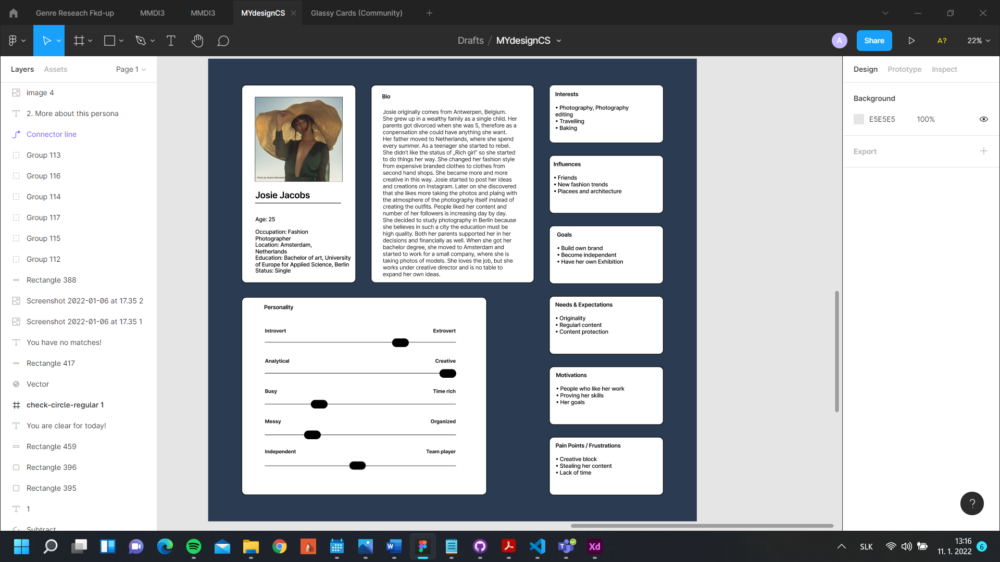
The second Persona is Josie Jacobs, Belgian fashion photographer, currently residing in Amsterdam, Netherlands. She is looking for a way to establish her own brand using her own produced content, while preserving her originality and preventing competitors stealing her ideas.
User Journey
User journey represents the steps that the user needs to go through while using the product. Furthermore, we are predicting, based on the user research, how the users might feel during fulfilling the tasks. However, the emotions evoked by the behavior and the visuals of the web application cannot be always positive. To use this for our advantage, we took notes of how we can improve the user interaction and the overall satisfaction. This helped us to plan out the process starting from submitting the cases, while taking the user's emotion in mind
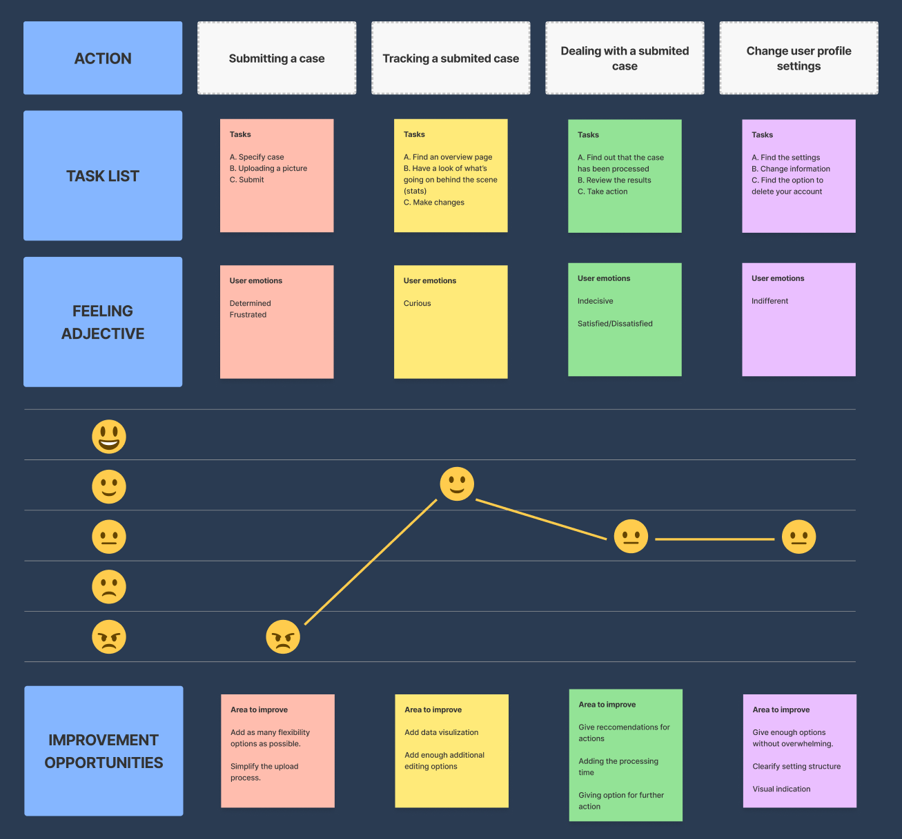
Developement Method
At the beginning of the whole process, we need to establish what kind of development method we are going to use. In this project we will be using Design Thinking development. Since it is a human-centered methodology, we bring the users to the spotlight and try to understand their problems, wants, needs, values, feelings. As we will know more about our users, we might re-frame our problem in order to achieve the best solution for them.
Design thinking consist of 5 parts – empathize, define, ideate, prototype and test. It is non-linear process. That means, while we are moving forward in the overall process, we will be going back to the former steps
Empathize
In this phase of the project, the main goal was to connect with our users – know who they are, what are their needs and expectations.
Starting with the client research with an explanation of the problem, through the competitor research and collection of the standard data, continuing with the conduction of the qualitative interviews with a few content creators, designing the personas, forming the empathy map, and lastly, creating the user journey leads to getting profitable results.
Define
Progressing forward using the Design Thinking method, we had to re-phrase the problem into human-centric ways. The user is brought to the foreground, where everything is adapted to fulfill his/her need and preferences. To lead our product in the right direction, we have started with formulating problem from the users’ point of view

To simplify these formulations, we have narrowed them down by paraphrasing them into one sentence forms.
To support the idea and process we had reformulated the statement once again by creating questions from the one sentence insights
Content Inventory
Since we need to determine the scope of the project, we have conducted content inventory, which is a list of all necessary elements of the project.
Ideate
After getting connected with the users and understand what they want and need, we are kicking off the ideation phase
Brainstorm
As a result of our inspiring brainstorming session, ended up with ideas based on both the user research results and the human-centered formulations.
One of the most important result was proceeding with the dashboard styled design as we believed it could incorporate the most tools and usability.
Moreover, to accomplish this we stumbled upon applying elements of glassmorphism to help emphasize on the objects.
Information Architecture
Our goal was to establish the information architecture in a way to make sure that the users can get their tasks done by spending the least amount of effort as possible, resulting in a satisfying, pleasant experience. This will result that the users will fill the product much more natural which could result in an even better experience as they are not focusing on figuring out the expected behavior on the website. The energy they are saving by this could be transferred to accomplishing their task.
The main purpose of web pages, in our case a web app, is to communicate important and relevant information towards the user. Our main task is to provide the user with a clear and assorted information, which is being accompanied by well-defined suitable font type, size and color. For this project we believe that we had to carefully select them to make the use of the solution as easy as possible. For this reason, we tried to clearly separate the different categories and pages. We try to emphasize and improve on the usability as much as we can according to this.
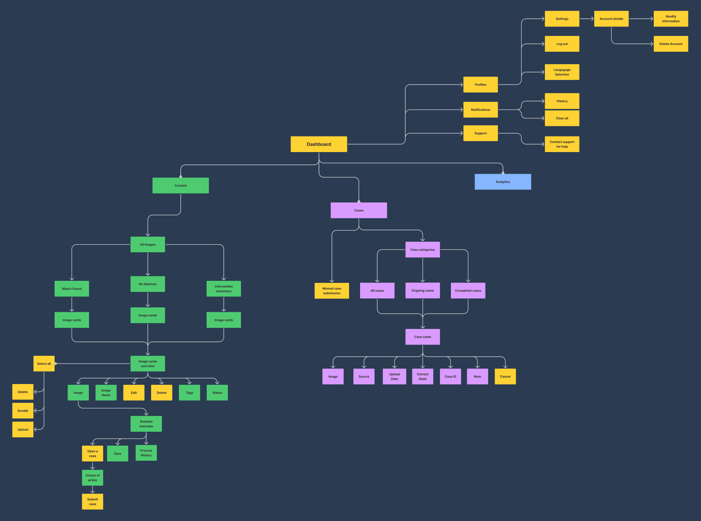
Prototype
After concluding our ideations phase, we had started make initial sketches that represents the primary idea of our design solution.

Low-Fidelity Wireframes
To become more precise and see the actual details, although not fully acquired yet, we have created low-fidelity wireframes, where we were focusing on the layout and identifying elements.
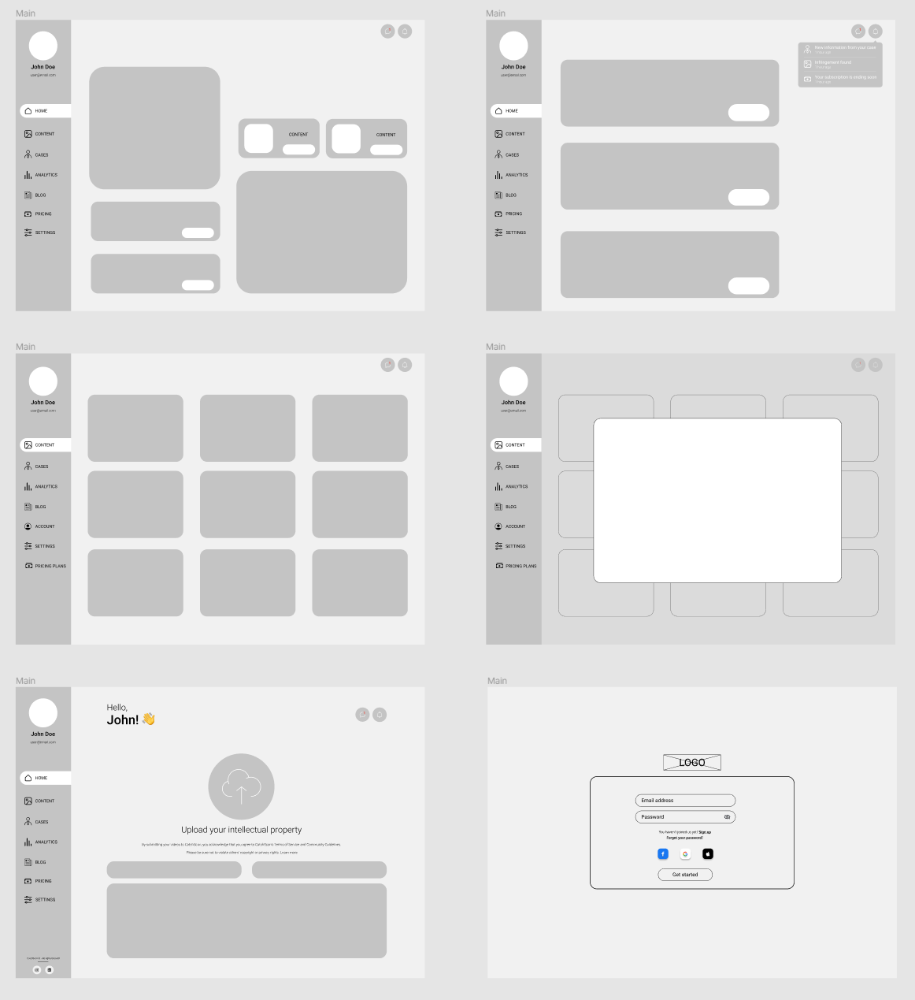
Considering the results of the user research we chose to apply a desktop first approach. This is because based on the user's preferences this is a more corporate pensive way of presenting the users with features. Nevertheless, it is an approach more welcome in the professional space and there are more opportunity to increase the number of features.
High-Fidelity Mockups
Having done with wireframes, guided us towards creating high-fidelity mockups.
Before we started the actual process of designing, we had decided on using Atomic Design as our choice of team collaboration methodology
Atomic Design
As the atomic design consists of components, our design process started with the smallest ones - Atoms
By combining atoms together, we formed molecules. In our case as a molecules, we can consider buttons in navigation formed with an icon and text and cards with the buttons, texts, and images
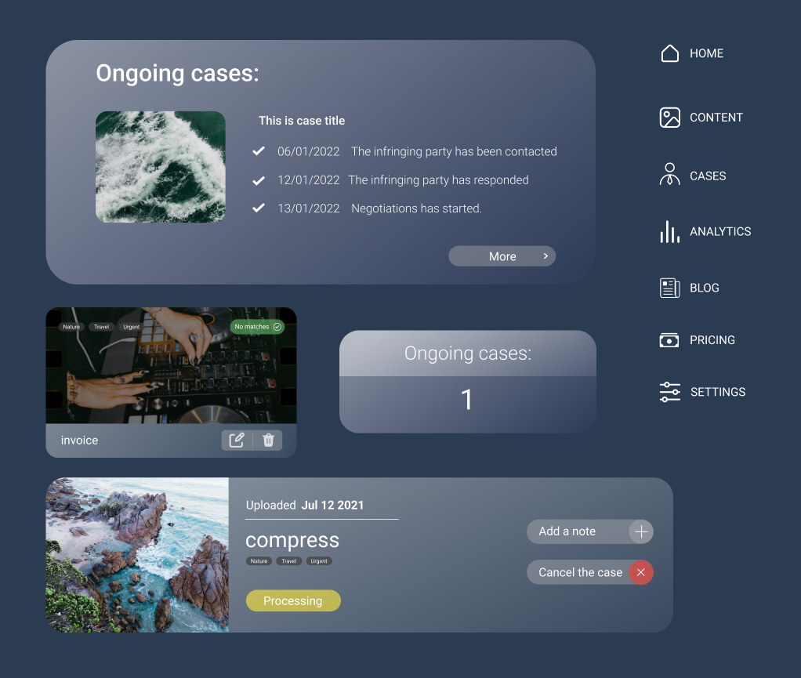
Organisms are next phase of connection smaller elements. Putting together cards we create “libraries”, menu buttons - navigation
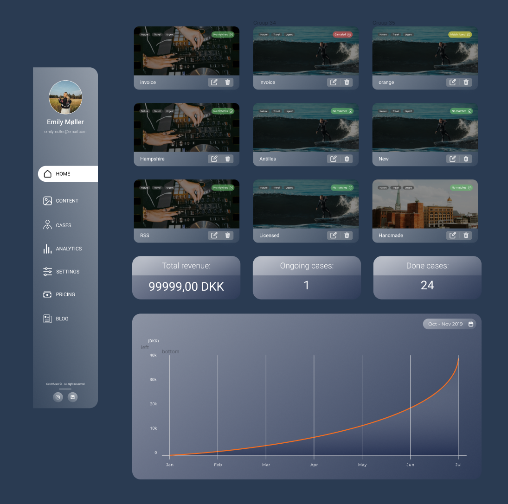
Templates are already complex solutions. It is a combination of organisms, and it represents how the pages will look like
Finally, the complete design with included content - pages
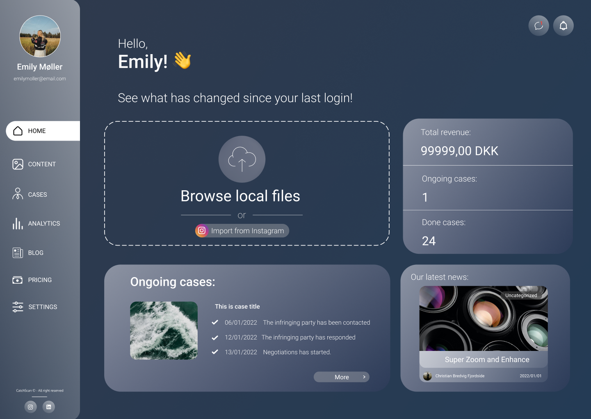
Colors
The first that draws the attention of the user are colors. They make the first impression, they affect how the users perceive the interface, see the functionality, they might evoke emotions, they increase the brand recognition as well, and invite the users to take an action. We are preparing solution for CatchScan, start-up company, with an already existing branding, thus we have decided to keep with their image and use their brand colors - blue and orange
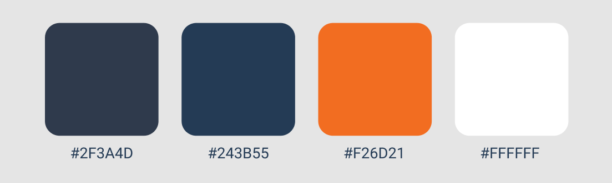
Even though, this was not the requirement, we believe to keep the consistency with their promoting website is a good brand move
Iterations
Throughout the design process, we went through several iteration before we found the best solution. It was not easy to find solution that captures our style the most in harmony

Our final solution resulted in having a simple one-color background, as we believed this was can the user focus the most on the content, which will facilitate the process of fulfilling any task.
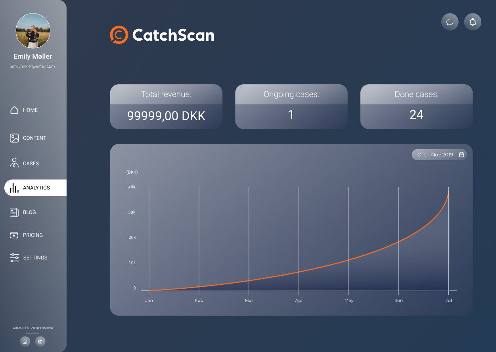
Test
To validate our findings, we had proceeded with conducting hybrid testing, using Five Second and Think Aloud tests. They helped us to verify that call-to-actions and the other important information are highlighted enough to catch the users attention and to make sure the user can interact with the product effortlessly.
Realization
Our project was coded using HTML, CSS and JavaScript. Additionally, we utilized Tailwind as our choice of CSS Framework, which resulted in a swift and efficient workflow.
As we were creating a web app for service, having the feature of being able to sign up and log in is an essential part. We established this feature therefore the users can access the platform in the easiest way possible
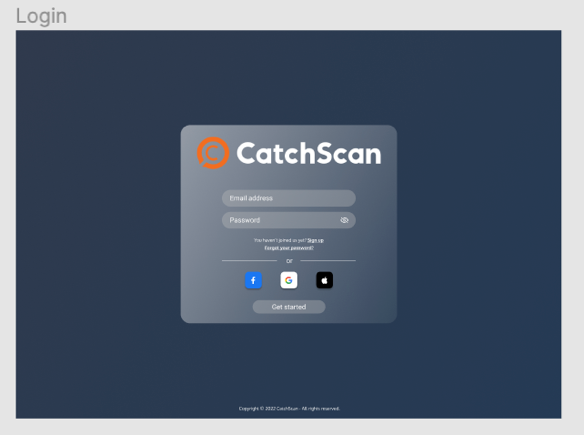
We started off the sign-up sequence by designing with the objective the ask for the most essential data from the user which is inevitable. For the subsequent steps we had to utilize our research and evaluate which lead us to include multiple user input.
Summary
To wrap up our process, we have created a dashboard for the SaaS company - CatchScan. We have created a way for their customers to protect their intellectual properties by giving them the possibility to upload their content for the algorithm to process. Furthermore, we provide them with the opportunity to initiate legal action against the found misusers, while supplying them with useful analytics
The product was accomplished in a human-centered way though conducting broad research, resulting in an easy-to-use, intuitive interface.